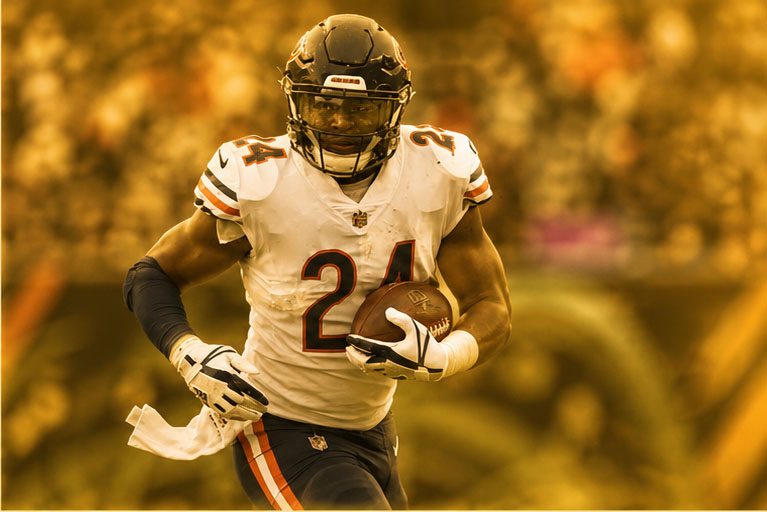
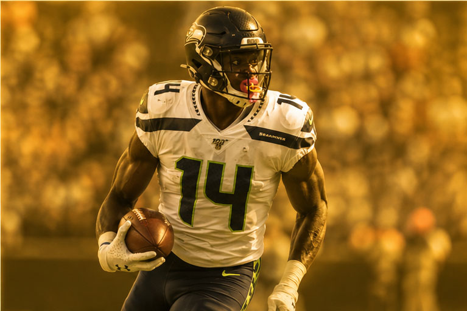
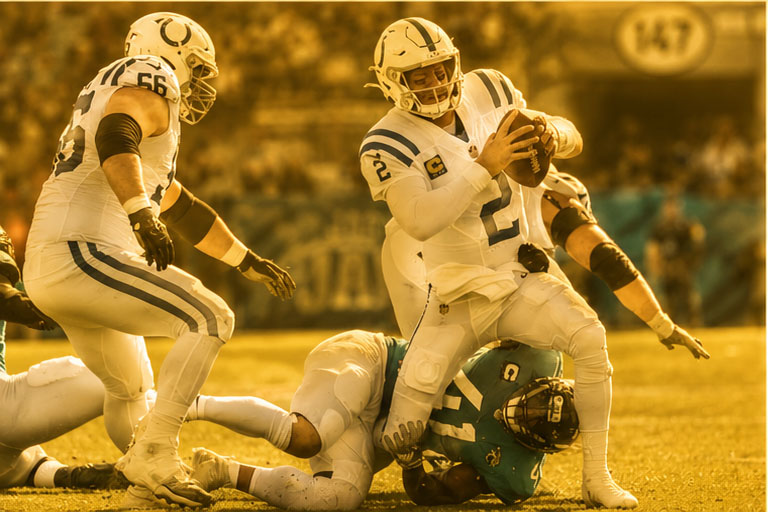
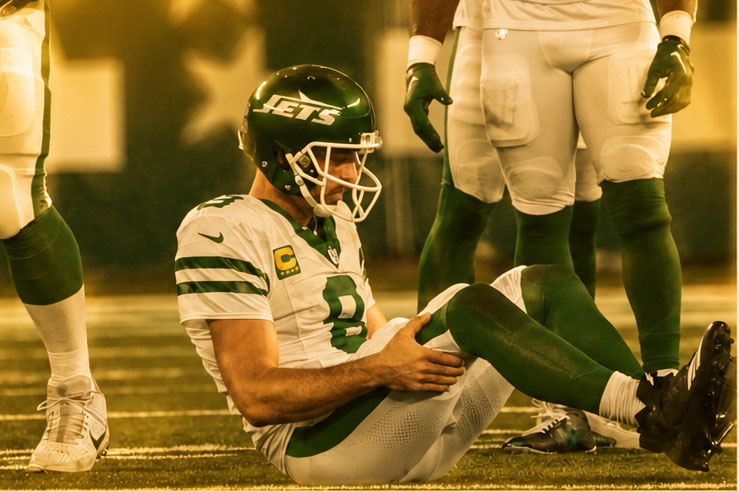

Moment #1
Hall of Fame Moment
Add a short caption or story here.
The Receipt Book
The official Krusty Krab League Hall of Records: regular season dominance, playoff runs, scoring explosions, player records, and league history.
Career Standard
Career Wins
Scoring Explosion
Dynasty Marker
Regular Season
| Record | Value | Holder | Year / Span |
|---|---|---|---|
| Best Winning Percentage, Career | .646 | Bard | Career |
| Best Average Finish | 2.6 | Bard | Career |
| Worst Average Finish | 5.7 | Gary | Career |
| Most Wins, Regular Season | 12 | Bard | 2018 |
| Best Winning Percentage, Single Regular Season | .857 | Bard | 2018 |
| Most Wins, Career | 122 | Bard | Career |
| Most 10-Win Regular Seasons | 7 | Bard | Career |
| Longest Winning Streak | 9 | Bad Hombres · Bard | 2017 |
| Most Losing Seasons | 8 | Hunter | Career |
| Most Losses, Career | 108 | Hunter | Career |
| Most Waiver Moves in a Season | 228 | KKL | 2021 |
Mini Games
Play-In
Playoffs
Bard
Bard
Bard · 2015, 2017, 2018, 2020
Bard
Bard · 2014–Currently
Gary · 2017–2023
Miner / Sco · 2022–Currently
Julio Think You Are? · Hunter · 2015
Championships
Bard · 2014–2017, 2020–2021
Bard · 2014–2017
Bard · 2015, 2016, 2020, 2021, 2024
Jake · 2016, 2019, 2023
Sco · 2020–2021
KKL Power Rating
Points & Moves
Scoring Records
Cincinnati Harambes · Jake · 2019
Not All Boys · Bard · 2018
Not All Boys · Bard · 2018
Bard Top Hunter Bottom · Sco · 2020
Jakes Brothers and Sisters · Miner · 2021
The Commish · Bard · 2019 Playoffs
Bard · 2018–2019
Bard · 2018, 2020
Player Records
| Position | Record | Player | Fantasy Team | Year |
|---|---|---|---|---|
| QB | 518.00 | Patrick Mahomes · KC | Gary | 2022 |
| RB | 434.00 | Christian McCaffrey · CAR | Jake | 2019 |
| WR | 371.00 | Cooper Kupp · LAR | Muffin | 2021 |
| TE | 305.00 | Travis Kelce · KC | Bard | 2020 |
| D/ST | 229.00 | Patriots · NE | Bard | 2019 |
| K | 149.00 | Brandon Aubrey · DAL | Bard | 2025 |
Player Records
| Position | Record | Player | Fantasy Team | Year / Week |
|---|---|---|---|---|
| QB | 61.00 | Josh Allen | Miner | 2024 Week 14 |
| RB | 56.00 | Jahmyr Gibbs · DET | Sco | 2025 Week 12 |
| WR | 57.00 | Tyreek Hill / Ja’Marr Chase | Multiple | Multiple |
| TE | 45.00 | Darren Waller · LV | Miner | 2020 Week 13 |
| D/ST | 37.00 | Patriots · NE | Bard | 2019 Week 2 |
| K | 20.00 | Multiple Players | Multiple | Multiple |
League Lore
The moments, screenshots, punishments, draft trips, meltdowns, trophies, miracles, and league memories that deserve to live forever.

Add a short caption or story here.

Add a short caption or story here.

Add a short caption or story here.

Add a short caption or story here.